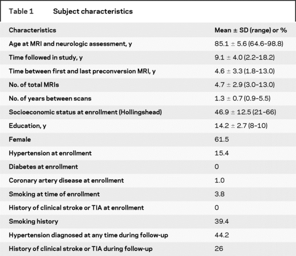
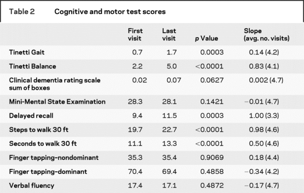
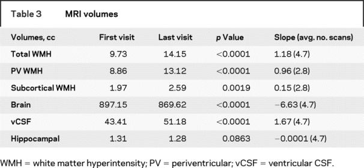
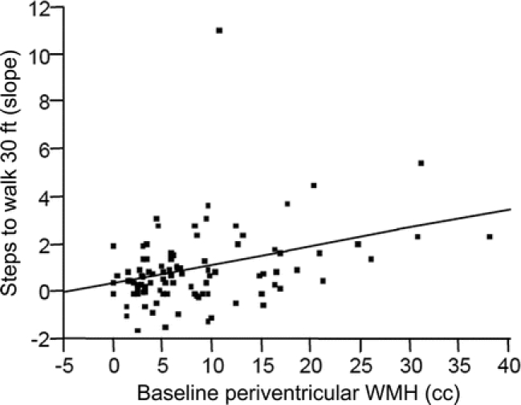
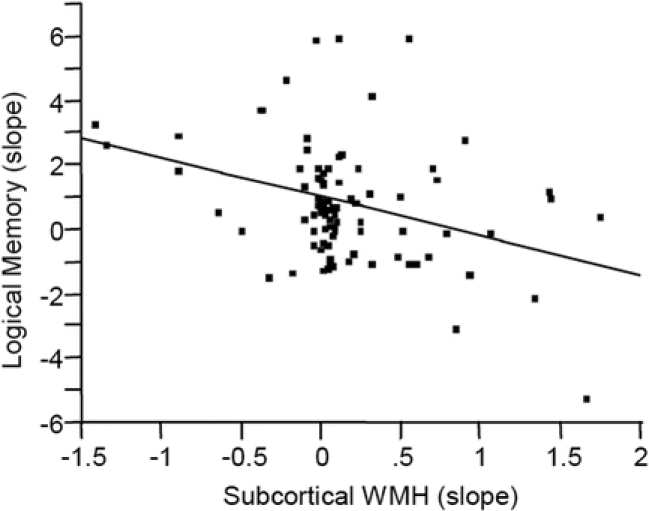

Abstract
Background:
White matter hyperintensity (WMH) change on brain MRI is observed with increased frequency in the elderly and has been independently associated with neurologic decline. The degree to which the location and rate of volume increase in WMH affects other structural brain changes along with cognitive and motor performance over time may determine subsequent degrees of risk for dementia and other syndromes of aging.
Methods:
One hundred four cognitively intact men and women followed longitudinally for up to 13 years underwent at least three MRIs with corresponding annual cognitive and neurologic assessments. Brain volume, ventricular CSF (vCSF), and total periventricular (PV) and subcortical WMH volumes were measured. Progression of MRI volumes was examined in relation to rates of cognitive, motor, and cerebral volume change based on slopes of outcomes.
Results:
Higher initial total and PV WMH volume was associated with total WMH, PV WMH, and vCSF progression, and with increased time and number of steps to walk 30 feet. Progression of PV WMH volume was associated with increased time to walk 30 feet. Progression of subcortical WMH volume was associated with decreased performance on logical memory testing and increased rate of vCSF volume change.
Conclusion:
Increased total and periventricular (PV) white matter hyperintensity (WMH) burden and progression of PV WMH burden are associated with decreased gait performance over time, while progression of subcortical WMH volume is associated with memory decline in cognitively intact elderly. Greater progression of WMH burden is associated with an increased risk of memory and gait dysfunction, and thus should not be considered a benign process.
GLOSSARY
- CDR
= Clinical Dementia Rating Scale;
- ICV
= intracranial volume;
- MMSE
= Mini-Mental State Examination;
- PCI
= persistent cognitive impairment;
- PV
= periventricular;
- TE
= echo time;
- TR
= repetition time;
- vCSF
= ventricular CSF;
- WMH
= white matter hyperintensity.
Areas of white matter signal change are frequently observed on neuroimaging of nondemented individuals.1 Such white matter changes are seen as white matter hyperintensities (WMH) on T2-weighted MRI, and are frequently associated with poorer performance on tests of cognitive and motor skills in numerous cross-sectional studies.2–5 The natural history of WMH change and its contribution to CNS decline in cognitively intact elderly is unclear. While some have reported differing etiologies of periventricular (PV) WMH from subcortical WMH,6,7 there is evidence from others8 that a clear distinction between the two is not warranted. The question as to whether there is likely to exist a differential effect of total WMH burden on age-related morbidity based on the location within the CNS of white matter change remains unanswered. Longitudinal studies looking at the progression of WMH have been reported9–19; however, differences in methodologies of WMH measurement make comparisons difficult. A poor correlation in estimated WMH burden between differing visual rating scales20 and increased reliability and sensitivity of WMH volumetric measurements21 make studies using volumetric measures preferable to those that use visual rating scales. Only one previous study has investigated the differential effects of PV and subcortical WMH volume progression on changes in cognitive performance,16 and to our knowledge none have examined such volumetric changes in relation to rates of motor skill decline over time. Such processes are crucial to our understanding of WMH effects on what may have been previously considered to be age-related changes in CNS processing. The purpose of this study was to examine the natural history of WMH progression in a well-characterized population of initially cognitively intact elderly using MRI measurements obtained from at least two different time points, and determine its effects on CNS structural change as well as cognitive and motor performance over time. In addition, we aimed to study potential differential effects of WMH change based on whether its location was periventricular or in the subcortical brain structures.
METHODS
Subjects.
One hundred four subjects aged 65 or older were selected from an ongoing longitudinal study of brain aging and cognition (Oregon Brain Aging Study),22,23 based on having three or more MRIs analyzed for total WMH volume corresponding with a cognitive and motor evaluation prior to conversion to persistent cognitive impairment (PCI). Subjects were considered to have PCI at the time of their first of two consecutive semiannual Clinical Dementia Rating Scale (CDR) scores of 0.5. For subjects who converted to PCI, neurologic and MRI data were obtained from the last visit prior to their conversion. All subjects signed written informed consent, and approval from the Institutional Review Board of Oregon Health & Science University was obtained. At entry, subjects were not taking medications that affect cognition, and were independent in daily activities. Entry inclusion criteria included a score of 24 or greater on the Mini-Mental State Examination (MMSE)24 and a 0 on CDR.25 During annual follow-up visits, subjects underwent brain MRI, as well as detailed neuropsychological and neurologic testing, which included Logical Memory (delayed story recall),26 CDR sum of boxes, and MMSE. Evaluation of balance and motor function were also obtained, and included the Tinetti gait and balance scales,27 time and number of steps needed to walk 9 meters, and number of finger taps in 1 minute (dominant and nondominant hand). Information regarding subjects’ cardiac risk factors at enrollment was obtained from a detailed medical history form. Changes in subjects’ general medical condition were obtained yearly through patient report, and from 1996 on, from a modified cumulative illness rating scale,28 administered yearly.
MRI procedures.
Scan protocol.
The general procedures have been described previously.29 Briefly, MRI scans were performed with a 1.5 Tesla magnet. The protocol consists of the following: slice thickness of 4 mm (no gap), 24 cm field of view with a 256 × 256 matrix (0.86 mm × 0.86 mm pixel size) and 0.5 repetitions per sequence. The brain was visualized in two planes using the following pulse sequences: 1) T1-weighted sagittal images centered in the midsagittal plane with the pituitary profile (including the infundibulum) and cerebellar vermis clearly delineated: repetition time (TR) = 600 msec, echo time (TE) = 20 msec images; 2) multiecho sequence T2-weighted (TR = 2,800 msec, TE = 80 msec) and proton density (TR = 2,800 msec, TE = 32 msec) coronal images perpendicular to the sagittal plane. Coronal plane is determined by a line drawn from the lowest point of the splenium to the lowest point of the genu of the corpus callosum on the midsagittal image.
Image analysis.
Image analysts evaluated each scan independently and were blind to subjects’ cognitive or neurologic testing, demographic characteristics, and results from previous imaging. Image analysis software, REGION, is used to quantitatively assess regional brain volumes of interest.29,30 Briefly, recursive regression analysis of bifeature space based on relative tissue intensities was employed to separate tissue types on each coronal image. Pixel areas were summed for all slices and converted to volumetric measures by multiplying by the slice thickness for each of the following regions of interest: PV WMH, subcortical WMH, and total WMH (PV plus subcortical WMH), brain volume, vCSF, and hippocampal volumes. Intracranial volume was determined by automatically regressing for brain tissue, CSF, and WMH collectively against bone, creating a boundary along the inner table of the skull. Additional boundaries were manually traced along the tentorium cerebelli and the superior border of the superior colliculus, the pons, and the fourth ventricle. The pituitary, vessels in the sphenoidal area, and any sinuses that may have been included by the automatic regression were also manually excluded. Hippocampal bodies were determined by manually outlining the structures with a cursor directly on the computer display, as previously described.30 Rates of change of outcomes were determined by calculating the slope obtained from the regression line created by all available data points. The intraclass correlation coefficient as a measure of reliability of volume determination was ≥0.95 for all regions except for subcortical WMH volume, which was 0.73.
Quantification of WMH using REGION.
Using REGION’s sampling tools, the analyst selects representative, unambiguous pixels of WMH (as well as brain tissue, fluid, and bone) from the multiecho sequence display. A regression model including the proton density and T2 intensities and location of each pixel differentiates tissue types. WMH is distinguished from brain tissue and fluid based on higher signal on both the proton density and T2 images. Areas of high signal that immediately abut ventricular fluid as visualized on the coronal image are considered periventricular. WMH bounded by brain tissue on all sides is considered subcortical. Areas of infarct were determined separately from WMH volumes based on whether or not they had clean or sharp edges and are relatively dark on proton density images.
Statistical analysis.
Longitudinal clinical data and coded MRI data were exported from a dedicated database into the statistical program JMP (SAS Institute, Cary, NC). MRI regions and clinical outcomes of interest were examined as continuous variables, except for CDR SOB slope, which was examined as a binary variable (with 0 = no or negative change and 1 = positive change over time). Subjects whose baseline WMH volume and WMH volume change exceeded 3 standard deviations from the mean were excluded from analyses in which those variables were used. This included three subjects for baseline total and PV WMH, two subjects for total WMH change, and one subject for baseline subcortical WMH, PV WMH change, and subcortical WMH change. Change in clinical outcome measures over time was determined from the calculated slope of a regression line created from two or more time points for each subject. Relationships between baseline MRI volumes and cognitive and motor change were determined using multiple regression analyses after adjusting for age and intracranial volume (ICV). For the outcome of CDR SOB change, a logistic regression was performed. Relationships between MRI volume change and cognitive and motor change were determined using multiple regression analyses after adjusting for age, baseline WMH volume, and ICV. Matched pair analyses were used to determine whether significant changes in outcome measures occurred over time. Relationships between MRI volumes and age were determined using simple linear regression analyses. Logistic regression analyses were used to determine the relationships between WMH change and cerebrovascular risk factors.
RESULTS
Participants were followed up to 18 years (average of 9.1 years). Baseline subject characteristics are presented in table 1. Few subjects were known to have vascular risk factors at entry. Each subject underwent an average of 4.6 MRI scans with an average of 1.3 years between scans. During the course of the study, significant changes in gait, balance, and memory testing were observed (table 2). Only clinical measures that showed a significant change over time were examined in relation to WMH volumes. Increased age was associated with greater WMH volume at baseline. Eighty-four percent (87/104) of subjects had some increase in total WMH volume over time. Seventy-four percent (69/93) and 68% (63/93) had increases in periventricular and subcortical WMH volume, respectively. Increased age was associated with greater baseline total (R2 = 0.14, p < 0.0001), PV (R2 = 0.14, p < 0.0002), and subcortical (R2 = 0.05, p < 0.0230) WMH burden. There was no correlation between age and rate of volumetric change over time. A significant increase in WMH volume was observed during the course of follow-up (table 3). The presence of diabetes, coronary artery disease, smoking history, or a clinical history of stroke or TIA was not associated with WMH progression. Subjects with a diagnosis of hypertension had a decreased rate of total WMH progression compared to those without a hypertension diagnosis. During the study period, 34% (35/104) of subjects converted to PCI. For those subjects, cognitive, neurologic, and MRI data were taken from their last visit prior to conversion.
Table 1 Subject characteristics

Table 2 Cognitive and motor test scores

Table 3 MRI volumes

Relationship between baseline WMH volumes and change in brain volumes over time, adjusted for age and ICV.
Higher baseline total WMH was associated with increased rate of WMH accumulation (R2 = 0.20, p < 0.0001) and vCSF volume increase (R2 = 0.13, p < 0.0022) over time. Similarly, higher baseline PV WMH volume was associated with increased rate of PV WMH (R2 = 0.16, p = 0.0002) and vCSF volume increase (R2 = 0.13, p = 0.0025). Increased baseline subcortical WMH volume was weakly related to increased vCSF volume change (R2 = 0.08, p < 0.0573). There was no association between baseline subcortical WMH burden and change in subcortical WMH volume over time. There was no association between baseline total, PV, or subcortical WMH and either brain or hippocampal volume change.
Relationship between change in WMH volumes and change in brain volumes over time, adjusted for age, ICV, and baseline WMH volume.
An increased rate of subcortical WMH change was associated with an increased rate of change in vCSF volume over time (R2 = 0.10, p < 0.0344). Changes in total, PV, and subcortical WMH volumes were not correlated with either brain or hippocampal volume change over time.
Relationship between baseline WMH volumes and change in cognitive and motor performance over time, adjusted for age and ICV.
Higher baseline total WMH volume was associated with increased rate of change in timed walking in seconds (R2 = 0.08, p = 0.0052) and number of steps (R2 = 0.12, p = 0.0125). This relationship was also observed with PV WMH volume alone where increased PV WMH was associated with increased rate of change in seconds (R2 = 0.12, p = 0.0039) and number of steps (R2 = 0.13, p = 0.0075) needed to walk 30 feet (figure 1). Increased baseline subcortical WMH volume was not related to change in gait performance over time. No relationship existed between baseline WMH volumes and change in memory test scores over time. All reported relationships except for that between baseline total WMH volume and rate of change in steps needed to walk 30 feet were significant after using an adjusted p value based on multiple comparison criteria. Decreased total WMH volume at baseline was weakly associated with having a positive change in CDR score (p = 0.0667). This relationship remained true when looking just at those who eventually converted to PCI (p = 0.0776), but not when those who remained cognitively intact were examined.

Figure 1 Relationship between baseline periventricular white matter hyperintensity (WMH) volume and rate of change of gait performance over time
Relationship between change in WMH volumes and change in cognitive and motor performance over time, adjusted for age, ICV, and baseline WMH volume.
A higher rate of PV WMH accumulation was associated with an increased rate of change in seconds needed to walk 9 meters (R2 = 0.15, p = 0.0453), while a higher rate of subcortical WMH change was associated with an increased rate of decline in memory score (R2 = 0.19, p < 0.0003) (figure 2). There was a weaker association between increased rate of total WMH change and decline in memory performance (R2 = 0.09, p < 0.0690). All relationships remained after adjusting for either rate of brain or vCSF volume change over time. After adjusting for rate of hippocampal atrophy, the relationship between greater rate of memory decline and subcortical WMH progression remained, but the relationship between memory decline and total WMH progression did not. The relationship between increased rate of subcortical WMH volume accumulation and decline in memory function remained significant after using an adjusted p value based on multiple comparison criteria.

Figure 2 Relationship between rate of subcortical white matter hyperintensity (WMH) volume change and rate of cognitive change over time
DISCUSSION
Results from this study show a dissociation in functional effects on CNS function between subcortical and PV WMHs. Specifically, increased rate of subcortical WMH accumulation was associated with a greater decline in cognition, while PV WMH progression was associated with decreased gait performance over time. Results from this study are among the first to show the relationship between volumetric subcortical and PV WMH progression and rates of cognitive and motor change in cognitively intact elderly. Like others,12,19 we have shown that a greater total WMH burden at baseline is associated with increased progression of WMH lesions over time. This relationship may be driven by PV WMH change, since there was no relationship of total baseline WHM volume to longitudinal change in subcortical WMH volumes. The baseline total and PV WMH volumes were functionally associated with greater decline in ambulation abilities over time, a finding observed by an earlier study.31
We have shown that progression of PV WMH volume is associated with increased gait slowing over time. The relationship between increased rate of WMH burden and worse performance on gait testing over time has been reported,15,32 although previous studies did not examine the potential differential relationships between subcortical and PV WMH volume change and progressive gait dysfunction. Increased progression of subcortical WMH lesions was associated with increased rate of memory decline, independent of cerebral or hippocampal atrophy. This was examined but not seen in one previous study16 that used a visual rather than auditory verbal memory task. Others13 have reported a relationship between total WMH and memory decline that did not remain after adjusting for brain volume change, which was also associated with WMH progression. We did not find a relationship between white matter progression and brain volume loss, but did see such a relationship with vCSF volume increase over time. These differences between findings are likely due to multiple factors, including differences in mean age, baseline WMH and brain volumes, and our exclusion of data from subjects with signs of cognitive impairment in calculated rates of volume change. By restricting our data to only the period when subjects were known to be cognitively intact, we hoped to limit potential confounding affects brought about by the inclusion of subjects with clinical and imaging sequelae of AD. Ventricular CSF volume increase may be an earlier, more sensitive sign of eventual brain volume decline in those with WMH changes. Alternatively, increased vCSF may be a secondary measure of total white matter volume loss, which was not measured in this study.
The presence of cardiovascular risk factors was not associated with WMH progression. In fact, subjects who had a diagnosis of HTN were less likely to have an increased rate of WMH accumulation over time. As it has been shown that the risk of greater WMH burden is higher in those with uncontrolled HTN compared with those with well-treated HTN,33 this may be secondary to a treatment effect that those with a clinical diagnosis of HTN received compared with others who may have had undiagnosed elevated blood pressure.
Weaknesses of the study include the limitations in generalizing results from this study to the general population, as subjects from this study had relatively few cardiovascular risk factors, in particular, hypertension and diabetes, at entry. In addition, only one test of memory function, delayed story recall, was examined. Given the deficits in memory retrieval observed in subjects with other diseases of white matter involvement,34 future studies including memory tests with a recognition paradigm would likely provide a more comprehensive picture. Strengths of this study include the strict exclusion of MRI and neurologic data from subjects with PCI, thus limiting potential confounding effects of comorbid CNS or neurodegenerative disease. In addition, this is one of the first studies to use three or more MRIs in calculating rates of change of total WMH volume, which is likely to decrease the amount of variability inherent in such longitudinal measures.
This study has shown that greater WMH progression rate is associated with increased rate of decline on gait and memory function in cognitively intact elderly. The different associations of subcortical and PV WMH change with decreased cognitive and motor performance suggests that localization of baseline WMH burden and WMH progression may help to identify those at risk for either cognitive or motor decline. It is possible that identification of distinct risk factors and prevention strategies for each may be needed in order to maintain cognitive health and ambulatory function in our growing elderly population.
Address correspondence and reprint requests to Dr. Lisa Silbert, Layton Aging and Alzheimer’s Disease Center, Department of Neurology, CR-131, Oregon Health & Science University, 3181 S.W. Sam Jackson Park Road, Portland, OR 97201 silbertl@ohsu.edu
Supported in part by grants from the Department of Veterans Affairs and National Institutes of Health (P30 AG 08017, M01 RR000334, and K23 AG 24826-01), Paul B. Beeson Career Development Award in Aging, and American Academy of Neurology Foundation Clinical Research Training Fellowship.
Disclosure: The authors report no disclosures.
Received November 9, 2007. Accepted in final form March 17, 2008.
REFERENCES
- 1.Yue NC, Arnold AM, Longstreth WT Jr, et al. Sulcal, ventricular, and white matter changes at MR imaging in the aging brain: data from the cardiovascular health study [see comment]. Radiology 1997;202:33–39. [DOI] [PubMed] [Google Scholar]
- 2.Baum KA, Schulte C, Girke W, Reischies FM, Felix R. Incidental white-matter foci on MRI in “healthy” subjects: evidence of subtle cognitive dysfunction. Neuroradiol 1996;38:755–760. [DOI] [PubMed] [Google Scholar]
- 3.DeCarli C, Murphy DG, Tranh M, et al. The effect of white matter hyperintensity volume on brain structure, cognitive performance, and cerebral metabolism of glucose in 51 healthy adults. Neurology 1995;45:2077–2084. [DOI] [PubMed] [Google Scholar]
- 4.Junque C, Pujol J, Vendrell P, et al. Leuko-araiosis on magnetic resonance imaging and speed of mental processing. Arch Neurol 1990;47:151–156. [DOI] [PubMed] [Google Scholar]
- 5.Longstreth WT Jr, Manolio TA, Arnold A, et al. Clinical correlates of white matter findings on cranial magnetic resonance imaging of 3301 elderly people: The Cardiovascular Health Study. [see comment]. Stroke 1996;27:1274–1282. [DOI] [PubMed] [Google Scholar]
- 6.Schmidt R, Fazekas F, Offenbacher H, et al. Neuropsychologic correlates of MRI white matter hyperintensities: a study of 150 normal volunteers. Neurology 1993;43:2490–2494. [DOI] [PubMed] [Google Scholar]
- 7.ten Dam VH, van den Heuvel DM, de Craen AJ, et al. Decline in total cerebral blood flow is linked with increase in periventricular but not deep white matter hyperintensities. Radiology 2007;243:198–203. [DOI] [PubMed] [Google Scholar]
- 8.DeCarli C, Fletcher E, Ramey V, Harvey D, Jagust WJ. Anatomical mapping of white matter hyperintensities (WMH): exploring the relationships between periventricular WMH, deep WMH, and total WMH burden [see comment]. Stroke 2005;36:50–55. [DOI] [PMC free article] [PubMed] [Google Scholar]
- 9.Wahlund LO, Almkvist O, Basun H, Julin P. MRI in successful aging, a 5-year follow-up study from the eighth to ninth decade of life. Magn Reson Imaging 1996;14:601–608. [DOI] [PubMed] [Google Scholar]
- 10.ten Dam VH, van den Heuvel DM, van Buchem MA, et al. Effect of pravastatin on cerebral infarcts and white matter lesions. Neurology 2005;64:1807–1809. [DOI] [PubMed] [Google Scholar]
- 11.van Dijk EJ, Prins ND, Vermeer SE, et al. C-reactive protein and cerebral small-vessel disease: the Rotterdam Scan Study [see comment]. Circulation 2005;112:900–905. [DOI] [PubMed] [Google Scholar]
- 12.Schmidt R, Enzinger C, Ropele S, Schmidt H, Fazekas F, Austrian Stroke Prevention Study. Progression of cerebral white matter lesions: 6-year results of the Austrian Stroke Prevention Study. Lancet 2003;361:2046–2048. [DOI] [PubMed] [Google Scholar]
- 13.Schmidt R, Ropele S, Enzinger C, et al. White matter lesion progression, brain atrophy, and cognitive decline: the Austrian stroke prevention study. Ann Neurol 2005;58:610–616. [DOI] [PubMed] [Google Scholar]
- 14.Taylor WD, MacFall JR, Provenzale JM, et al. Serial MR imaging of volumes of hyperintense white matter lesions in elderly patients: correlation with vascular risk factors. AJR. AJR Am J Roentgenol 2003;181:571–576. [DOI] [PubMed] [Google Scholar]
- 15.Whitman GT, Tang Y, Lin A, Baloh RW. A prospective study of cerebral white matter abnormalities in older people with gait dysfunction [erratum appears in 2001;57:1942]. Neurology 2001;57:990–994. [DOI] [PubMed] [Google Scholar]
- 16.van den Heuvel DM, ten Dam VH, de Craen AJ, et al. Increase in periventricular white matter hyperintensities parallels decline in mental processing speed in a non-demented elderly population [see comment]. J Neurol Neurosurg Psychiatry 2006;77:149–153. [DOI] [PMC free article] [PubMed] [Google Scholar]
- 17.Kramer JH, Mungas D, Reed BR, et al. Longitudinal MRI and cognitive change in healthy elderly. Neuropsychology 2007;21:412–418. [DOI] [PMC free article] [PubMed] [Google Scholar]
- 18.Garde E, Lykke Mortensen E, Rostrup E, Paulson OB. Decline in intelligence is associated with progression in white matter hyperintensity volume [see comment]. J Neurol Neurosurg Psychiatry 2005;76:1289–1291. [DOI] [PMC free article] [PubMed] [Google Scholar]
- 19.Sachdev P, Wen W, Chen X, Brodaty H. Progression of white matter hyperintensities in elderly individuals over 3 years. Neurology 2007;68:214–222. [DOI] [PubMed] [Google Scholar]
- 20.Mantyla R, Erkinjuntti T, Salonen O, et al. Variable agreement between visual rating scales for white matter hyperintensities on MRI: comparison of 13 rating scales in a poststroke cohort. Stroke 1997;28:1614–1623. [DOI] [PubMed] [Google Scholar]
- 21.van den Heuvel DM, ten Dam VH, de Craen AJ, et al. Measuring longitudinal white matter changes: comparison of a visual rating scale with a volumetric measurement. AJNR Am J Neuroradiol 2006;27:875–878. [PMC free article] [PubMed] [Google Scholar]
- 22.Howieson DB, Holm LA, Kaye JA, Oken BS, Howieson J. Neurologic function in the optimally healthy oldest old: neuropsychological evaluation. Neurology 1993;43:1882–1886. [DOI] [PubMed] [Google Scholar]
- 23.Kaye JA, Oken BS, Howieson DB, Howieson J, Holm LA, Dennison K. Neurologic evaluation of the optimally healthy oldest old. Arch Neurol 1994;51:1205–1211. [DOI] [PubMed] [Google Scholar]
- 24.Folstein MF, Folstein SE, McHugh PR. “Mini-mental state”: a practical method for grading the cognitive state of patients for the clinician. J Psychiatr Res 1975;12:189–198. [DOI] [PubMed] [Google Scholar]
- 25.Morris JC. The Clinical Dementia Rating (CDR): current version and scoring rules.[see comment]. Neurology 1993;43:2412–2414. [DOI] [PubMed] [Google Scholar]
- 26.Wechsler D. Wechsler Memory Scale, third ed. San Antonio: The Psychological Corporation, 1997. [Google Scholar]
- 27.Tinetti ME. Performance-oriented assessment of mobility problems in elderly patients. J Am Geriatr Soc 1986;34:119–126. [DOI] [PubMed] [Google Scholar]
- 28.Parmelee PA, Thuras PD, Katz IR, Lawton MP. Validation of the Cumulative Illness Rating Scale in a geriatric residential population [see comment]. J Am Geriatr Soc 1995;43:130–137. [DOI] [PubMed] [Google Scholar]
- 29.Mueller EA, Moore MM, Kerr DC, et al. Brain volume preserved in healthy elderly through the eleventh decade. Neurology 1998;51:1555–1562. [DOI] [PubMed] [Google Scholar]
- 30.Kaye JA, Swihart T, Howieson D, et al. Volume loss of the hippocampus and temporal lobe in healthy elderly persons destined to develop dementia. Neurology 1997;48:1297–1304. [DOI] [PubMed] [Google Scholar]
- 31.Baloh RW, Ying SH, Jacobson KM. A longitudinal study of gait and balance dysfunction in normal older people. Arch Neurol 2003;60:835–839. [DOI] [PubMed] [Google Scholar]
- 32.Longstreth WT Jr, Arnold AM, Beauchamp NJ Jr, et al. Incidence, manifestations, and predictors of worsening white matter on serial cranial magnetic resonance imaging in the elderly: the Cardiovascular Health Study. Stroke 2005;36:56–61. [DOI] [PubMed] [Google Scholar]
- 33.Liao D, Cooper L, Cai J, et al. Presence and severity of cerebral white matter lesions and hypertension, its treatment, and its control: The ARIC Study: Atherosclerosis Risk in Communities Study. Stroke 1996;27:2262–2270. [DOI] [PubMed] [Google Scholar]
- 34.Filley CM. The behavioral neurology of white matter. In: Cognitive Dysfunction and Dementia; Memory Retrieval Deficit with Normal Procedural Memory. New York: Oxford University Press, 2001. [Google Scholar]